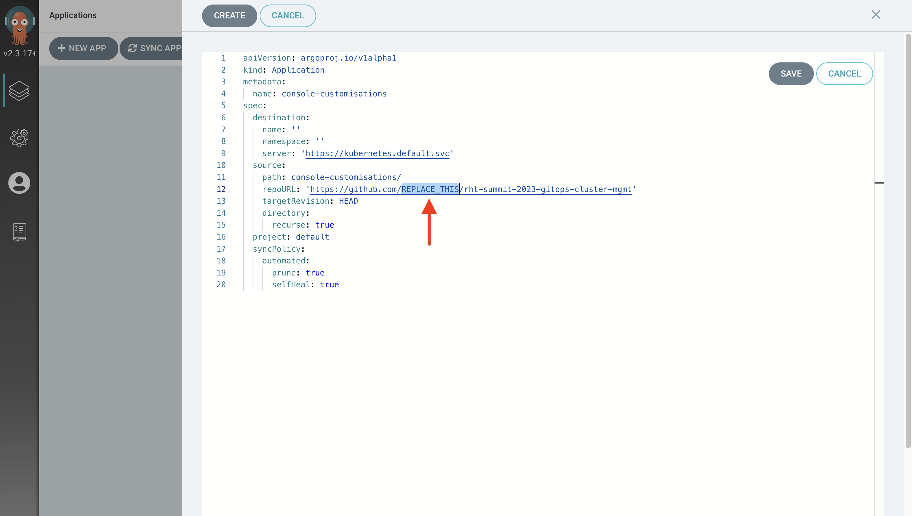
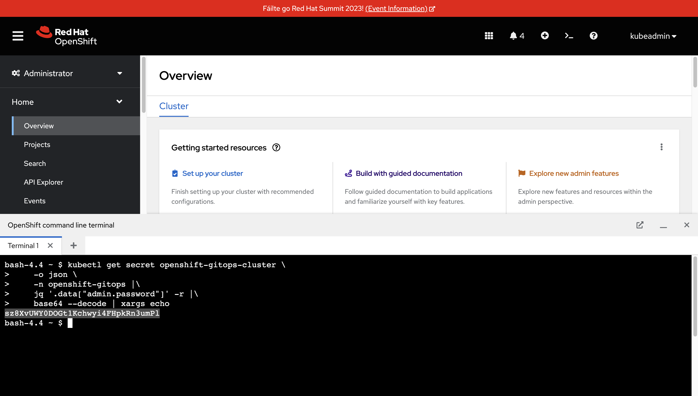

First Steps with GitOps using Argo CD ⏱️ Estimated Time: 5-10 Minutes 👩💻 Role: Cluster Administrator Red Hat OpenShift GitOps is based on the upstream Argo CD project. This means that the CRs (resources defined using YAML or JSON) used to manage your resources and applications using Argo CD can be used with Red Hat OpenShift GitOps. Understanding the Application CR The Application CR is provided by Argo CD to declaratively define, manage, and deploy applications on Kubernetes, and Kubernetes-based platforms such as Red Hat OpenShift. This CR allows you to synchronise resources in a Git repository to an OpenShift/Kubernetes cluster. Let’s take a look at an example of an Application CR: View the etc/console-customisations.application.yaml file in your copy of the workshop repository. This file defines an Application. Some notable fields include: spec.destination.server - The target Kubernetes cluster. This Application will sync against the Kubernetes API in the same cluster that’s running Red Hat OpenShift GitOps, i.e your OpenShift cluster. spec.source.repoURL - Defines the Git repository that contains the resources that should be synchronised the the Kubernetes cluster specified in spec.destination.server. spec.project - Argo CD has the concept of Projects. A Project can contain multiple Application instances, and can be used by to define RBAC. You will be using the default Project for now. spec.syncPolicy - Specifies rules for the synchronisation behaviour. In this case, we want to automatically sync once per minute, remove resources (prune) if they’ve been removed from the Git repository, and enable self-healing (selfHeal) so our cluster state always matches what’s specified in the Git repository. The concept of a Project in Argo CD is separate to the concept of an OpenShift Project. You’ll learn more about these in subsequent sections of this workshop. You’ll use the etc/console-customisations.application.yaml file to create your first Application in Argo CD! Create an Argo CD Application using the Argo CD UI The Application CR you examined in the prior section will be put to use now. Import the Application using the Argo CD dashboard: Return to the Argo CD dashboard. If you’ve forgotten how to access it, re-read the Accessing the Cluster GitOps Dashboard section of this workshop. Click the New App or Create Application button. A form will appear. You could use this form to define the Application, but there’s no need since you already have a YAML file prepared. Take a moment to examine the form, then move to the next step. Click the Edit as YAML button. Replace the pre-defined YAML template with the contents of your console-customisations.application.yaml from your GitHub repository. Edit the spec.source.repoURL field in the YAML to match the URL of your copy of the repository.  Failing to use the correct URL in the YAML will cause issues in subsequent sections. Make sure to replace that REPLACE_THIS text with your GitHub username or organisation! Click Save. Did you notice that the form has been updated to match the values that were defined in your YAML? Finally, click the Create button. The Application will appear as a new tile named console-customisations in the Argo CD Dashboard, and should report both Healthy and Synced statuses. Click on the tile to view the Application details. You should see a welcome-banner resource of type consolenotification, and a workshop-repository resource of type consolelink. Observing the Effects of your Application You might be wondering what creating your Application in Argo CD achieved. If you return to the OpenShift Web Console it should be displaying a new banner at the top of the screen. This is the result of the Argo CD Application synchronising the custom resources in the console-customisations/ directory of your Git repository to the OpenShift cluster. Specifically, it synchronised a ConsoleNotification CR to the cluster. Syncing New Changes to the OpenShift Cluster Try changing the message in the Console Notification and committing it to your repository on GitHub: Visit your copy of the workshop repository at github.com/%USERID%/rht-summit-2023-gitops-cluster-mgmt Open the console-customisations/console-notification.welcome-banner.yaml file. Click the edit icon in the top-right corner. Edit the spec.text to read Fáilte chuig Red Hat Summit 2023!, or a similar message of your choosing. Click the Commit Changes… button in the top-right. Enter a commit message, then click the Commit Changes button to commit to the main branch. Verify that your new message is synced to the OpenShift cluster: Return to the Argo CD Dashboard and select the console-customisations application. Observe the Last Sync Result section. Depending on your timing it will be showing your latest commit message, or a prior commit message. If your latest commit message isn’t shown, you can wait up to 3 minutes (this is the default Git polling interval) for Argo CD to perform a refresh, or use the Refresh button to for Argo CD to check the Git repository for changes. Once the latest commit has been synced you should see your new message displayed at the top of the OpenShift Web Console.  Summary Congratulations! Managing a notification banner might seem like a trivial example, but you learned some important stuff in doing so! You learned: About the Application CR, and how to use it. How to create an Application from the Argo CD dashboard using the form, or YAML. That YAML resources can be synchronised to the OpenShift cluster automatically by Argo CD. That the OpenShift Web Console can be customised using ConsoleNotification and other supported CRs. Continue to the next section to learn more advanced GitOps use-cases and techniques. Accessing the Cluster GitOps Dashboard Argo CD Self-Healing Capabilities